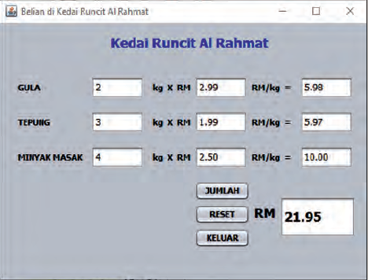

arrow_upward
View Material
Summative
Formative
View Performance
Manage Profile
Login
Questions
1
2
3
4
5
6
7
8
9
10
Summative Question
1) Yang manakah penyataan yang tidak tepat mengenai mengapa perlunya strategi dalam penyelesaian masalah?
Membantu pengembangan sesuatu konsep
Menggalakkan pembelajaran kendiri
Menggalakkan pembelajaran kendiri
Mewujudkan komunikasi sehala
2) Yang manakah penyataan yang tepat untuk menerangkan konsep penyelesaian masalah?
Proses mendalami butiran sesuatu masalah untuk mendapatkan satu penyelesaian.
Proses mengkaji butiran sesuatu masalah untuk mendapatkan satu penyelesaian.
Proses mengulang kaji butiran sesuatu masalah untuk mendapatkan satu penyelesaian.
Proses mereka bentuk butiran sesuatu masalah untuk mendapatkan satu penyelesaian.
3) Yang manakah penyataan yang tepat mengenai teknik dalam penyelesaian masalah?
I Teknik Leraian
II Pengecaman corak
III Peniskalaan
IV Algoritma?
I dan II
I, II dan III
II, III dan IV
Semua di atas
4) Apakah ciri-ciri yang tepat bagi algoritma?
I Arahan terperinci
II Butiran jelas
III Mempunyai batasan
IV Boleh dilaksanakan
I dan II
I, II dan III
II, III dan IV
Semua di atas
5) Al Rahmat ialah sebuah kedai runcit di Taman Iskandar. Untuk memudahkan pengiraan bagi barang-barang runcit, pemilik kedai tersebut, iaitu Encik Rahmat meminta anda membantunya untuk membina sebuah perisian bagi menghitung jumlah harga runcit. Antara muka sudah disiapkan dengan nama-nama kontrol seperti rajah yang berikut. Data bagi input kuantiti barang dan harga barang boleh berubah dan dapat dimasukkan dari papan kekunci.

Membantu pengembangan sesuatu konsep
Menggalakkan pembelajaran kendiri
Menggalakkan pembelajaran kendiri
Mewujudkan komunikasi sehala
1) Yang manakah penyataan yang tidak tepat mengenai mengapa perlunya strategi dalam penyelesaian masalah?
Membantu pengembangan sesuatu konsep
Menggalakkan pembelajaran kendiri
Menggalakkan pembelajaran kendiri
Mewujudkan komunikasi sehala
1) Yang manakah penyataan yang tidak tepat mengenai mengapa perlunya strategi dalam penyelesaian masalah?
Membantu pengembangan sesuatu konsep
Menggalakkan pembelajaran kendiri
Menggalakkan pembelajaran kendiri
Mewujudkan komunikasi sehala
8) Yang manakah penyataan yang tidak tepat mengenai mengapa perlunya strategi dalam penyelesaian masalah?
Membantu pengembangan sesuatu konsep
Menggalakkan pembelajaran kendiri
Menggalakkan pembelajaran kendiri
Mewujudkan komunikasi sehala
9) Yang manakah penyataan yang tidak tepat mengenai mengapa perlunya strategi dalam penyelesaian masalah?
Membantu pengembangan sesuatu konsep
Menggalakkan pembelajaran kendiri
Menggalakkan pembelajaran kendiri
Mewujudkan komunikasi sehala